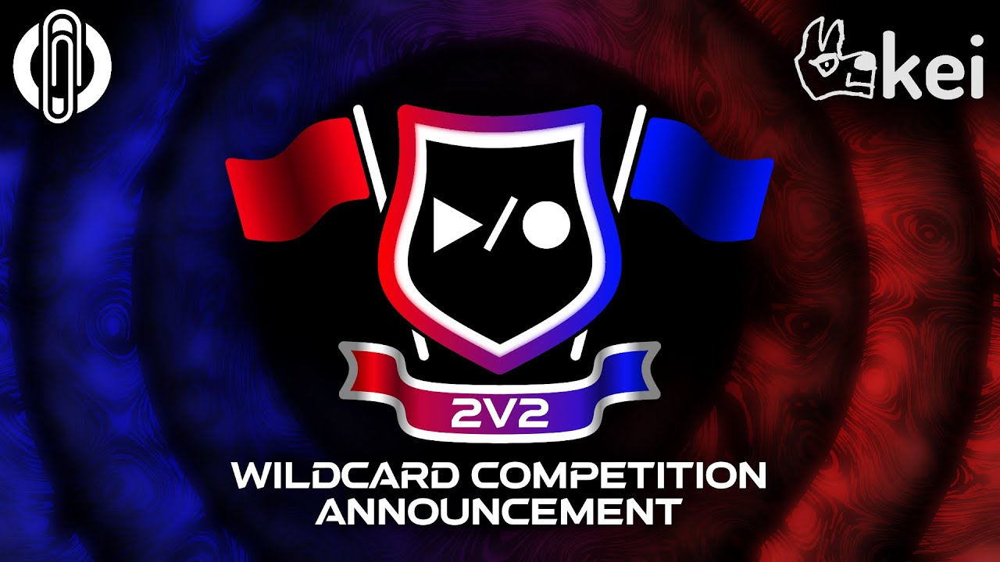

Loopstation

A Loopstation battle is a type of battle where a beatboxer uses the loop machine usually the Boss RC-505, along with other hardware, to loop and add effects and other modifications to their beatboxing to create live music.
Wildcard Competition Entry Rules
- Wildcard Competition open for submissions from 00:00 CET on the 5th May until 23:59 CET on the 23rd May 2021.
- The eight winners will be announced on the 3rd June 2021.
- Entry submissions must be uploaded to YouTube, and then submitted through the
submission form available on our website – http://www.swissbeatbox.com
- Any wildcards that are not submitted through the official registration form WILL NOT be accepted.
- Wildcards can only be uploaded ONCE (only the first upload registered will be accepted).
- Audio must be recorded from the loopstation, together with the video.
- Lip syncing, pre-loaded samples, or any effects that are not performed live are strictly prohibited. Everything must be performed and recorded live in the wildcard video.
- Your face and loopstation/extra device MUST BE VISIBLE in the video during the entire performance!
- It must be a one take with no cuts or angle changes! We need to see that this is a one take performance to be qualified as a wildcard.
- Audio post-production processing can be processed with Compression, EQ, and Reverb,
anything else is not allowed.
- Audio processing CANNOT be automated (cannot change over time, whole audio must be processed the same way).
- You must email sinjo@swissbeatbox.com with your device name and model number to have your
device approved (approval process may take up to 72 hours).
- If you do not get official approval for your device then your wildcard may not be accepted.
- See list of pre-approved devices below (this will constantly be updated, so keep checking back to see if your device has been added).
- One second audio effects device is allowed, but must be pre-approved by Sinjo first – please email sinjo@swissbeatbox.com with your second device model name and he will get back to you as soon as possible.
- Pre-approved devices:
- Korg Kaoss Pad KP3
- Helix Line6
- TC Helicon Voicelive 3 (and Extreme)
- BOSS GT-10B
- BOSS RC-505
- BOSS RC-202
- BOSS GT-1000
- BOSS SY-1000
- Additionally, you may also use midi controllers for your RC-505 or extra device, as well as audio pre-amps/converters for the microphone (for example, if you have a condenser microphone and need to provide phantom power, you may use an adapter to allow for this).
- All sounds must be generated or triggered through the human voice or body.
- No pre-recorded sounds allowed.
- No keyboards allowed.
- Please remember – if your approved device has the ability to use pre-recorded samples, you are not allowed to use these functions in the wildcard. If you do, you will be immediately disqualified from the competition. All synths must be voice triggered.
- Wildcards must include the correct introduction – “My name is [ARTIST NAME], and this is my KBB21: BOSS RC-505 Loopstation Edition wildcard.”
- Title of the wildcard must be labelled correctly – [ARTIST NAME] – KBB21: BOSS RC-505 Loopstation Edition Wildcard (e.g. Pepouni – KBB21: BOSS RC-505 Loopstation Edition Wildcard).
- THE LENGTH OF THE LOOPSTATION TRACK IN THE WILDCARD MUST NOT BE LESS THAN 3 MINUTES, OR EXCEED 3 MINUTES AND 30 SECONDS, NOT INCLUDING THE INTRODUCTION.
- If your wildcard contains any forms of hate speech, harassment of any kind, derogatory or demeaning speech, objectification of people, or anything that is purposefully offensive towards a person or group of people, the wildcard will be immediately disqualified.
- 8 wildcard winners will be announced on the 3rd of June 2021.